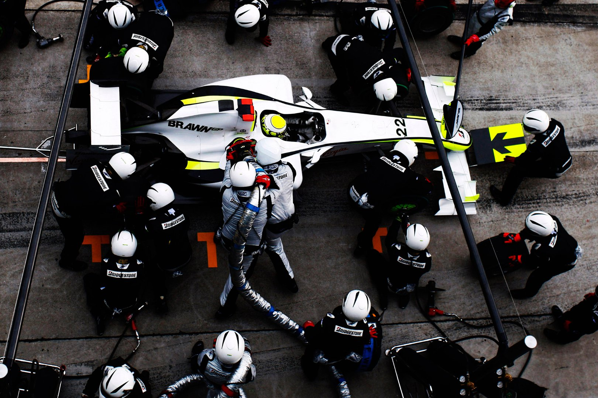
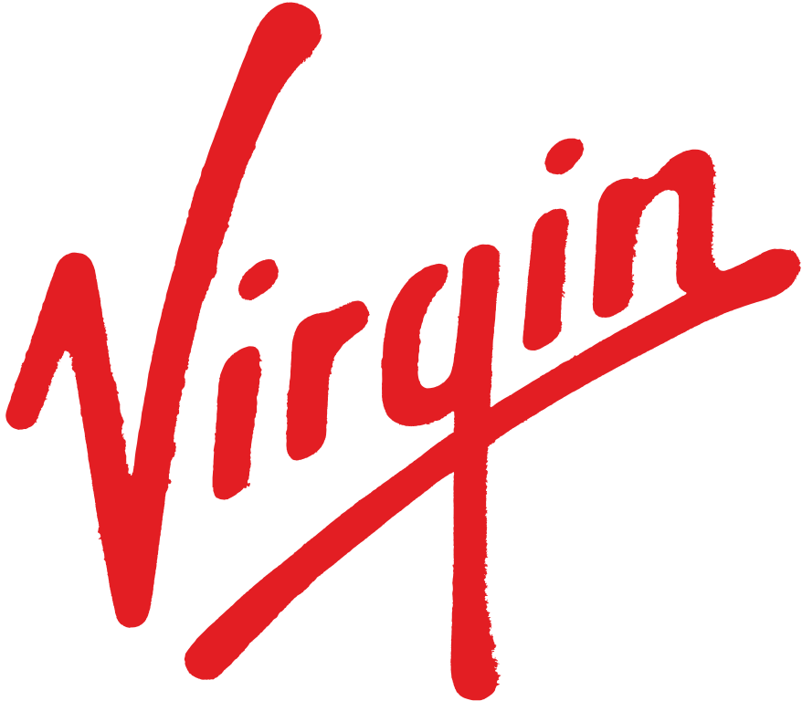
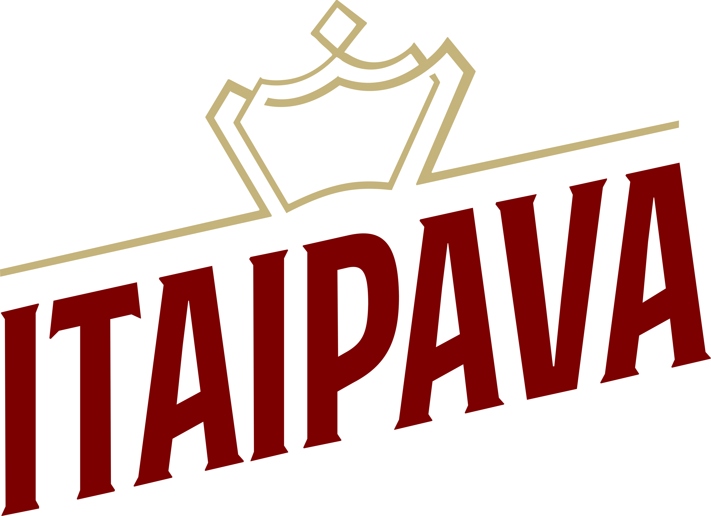

BrawnGP, a Formula One success story, emerged from the ashes of Honda Racing to secure the 2009 Constructors' Championship with a remarkable display of resilience and strategic brilliance

Brawn GP Formula One Team, formally Brawn GP Limited, was a British Formula One team that secured both the Constructors' Championship and the Drivers' Championship in 2009. It is the first team in the history of this category to achieve both championships in the same debut year.
The team used Mercedes engines. Despite initial challenges, the team garnered various sponsors as the season progressed, including Virgin, MIG Investments, Henri Lloyd, and PerkinElmer.
Let's relive together the epic achievement of BrawnGP in Formula 1, a tribute to the resilience, strategy, and passion that propelled this team to greatness. More than a sporting feat, it is a legacy of courage and determination that continues to inspire indelible emotions in the hearts of motorsport enthusiasts.
Partners
Some of our sponsors throughout the 2009 season

Virgin is the main sponsor in this team.

Brawn GP closed an agreement with the Petrópolis brewery.